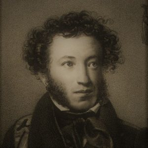

Роль и место в литературе
Александр Сергеевич Пушкин – гениальный поэт, ставший олицетворением целой эпохи,
названной золотым веком. Для русской литературы он стал Солнцем, а для мира остался загадкой.
Пушкин считается создателем национального русского литературного языка.
Происхождение
Александр Пушкин родился 26 мая (по новому стилю 6 июня) 1799 года в Москве. Будущий
поэт происходил из дворянского рода без титула. Прадедушка Пушкина – Абрам Ганнибал,
слуга Петра I. Отец — Сергей Львович Пушкин, известный светский острослов.
Был не равнодушен к поэзии, пробовал писать стихи. Мать — Надежда Осиповна,
внучка Абрама Ганнибала. Кроме Александра, в семье еще было двое детей, Лев и Ольга.
Ранние годы
В детстве Александр часто бывал у бабушки в селе Захарове. Для него наняли няню – Арину Родионовну. Эта простая женщина часто рассказывала ему сказки, привив любовь к литературе.
Образ няни остался в творческом наследии поэта.
Пушкин рос в атмосфере распространенной в то время галломании.
В их доме собирались представители творческой интеллигенции, часто звучали стихи.
Страсть ко всему французскому с боку родителей уравновешивалась любовью к народному творчеству
бабушки и няни. Поэтому в личности Пушкина словно уживались два мира.
Образование
Начальное образование Пушкин получил дома, как было принято в дворянских семьях.
В возрасте 12 лет Александр поступает в Царскосельский Лицей.
Это учебное заведение тогда только открыли, но оно уже считалось перспективным.
Его выпускники имели шанс получить хорошую государственную должность.
Лицей был построен под Петербургом, в месте летней резиденции царей.
В 1817 году Пушкин оканчивает лицей.
Ему присваивают чин коллежского секретаря 12-го класса и определяют на службу в Коллегию иностранных дел.
Время, проведенное в лицее, навсегда запомнилось Пушкину. Здесь он приобрел верных друзей, написал первые стихи.
Творчество
В становлении Пушкина как поэта немалую роль сыграли и отец, и бабушка, и няня. Он рос в творческой атмосфере, в их доме часто бывали поэты, музыканты. Начал писать стихи Александр в 13 лет, по его признанию. В это время он учился в Царскосельском Лицее. Студенты лицея выпускали рукописные журналы, в которых публиковали свои сочинения.
В 1815 году в день экзамена Пушкин прочел собственное стихотворение «Воспоминание в Царском Селе», которое высоко оценил присутствующий там поэт Гавриил Державин. В 1819 году поэт становится членом литературно-театрального сообщества «Зеленая лампа».
Сочинения Пушкина считают эталоном, подобно великим произведениям Данте и Гете. Поэт работал в разных литературных жанрах и стилях, прошел путь от романтизма к реализму.
Основные произведения
В 1820 году автор работает над поэмой «Руслан и Людмила». Это произведение стало легендарным благодаря вступлению «У Лукоморья дуб зеленый», текст которого знаком многим людям со школьных лет. Пушкин любил фольклор с детства, поэтому его поэма напоминает народную сказку.
В 1821 году из-под пера гения выходит поэма «Кавказский пленник», которая приносит ему известность. В период с 1823 по 1830 год Пушкин работает над романом в стихах «Евгений Онегин». Семь лет автор оттачивал произведение, которым зачитываются люди и в наше время. Роман «Евгений Онегин» – это не просто история о несбывшейся любви, а сложный конфликт разных характеров.
Последние годы
В 1837 году у Пушкина возникает серьезный конфликт с офицером Жоржем Дантесом. Поэт вызывает противника на дуэль. И, несмотря на то, что Пушкин был бывалым дуэлянтом, он получает ранение в живот. 29 января (10 февраля) 1837 года поэта не стало.
Интересные факты из жизни поэта
- Александр Пушкин утверждал, что помнил себя с 4 лет. Он вспоминал, как однажды на прогулке ощутил колебания земли. И действительно, в то время в Москве было зафиксировано землетрясение.
- Впервые Пушкин встретил Александра I, когда был еще совсем маленьким. Будущий поэт чуть не угодил под копыта коня императора, но тот вовремя его остановил.
- Любовь Пушкина к книгам исчислялась 3500 экземплярами в домашней библиотеке.
- Поэт владел многими иностранными языками.
- В жизни Пушкина, кроме литературы, были и другие увлечения: женщины и азартные игры.
Музей Александра Пушкина
Находится в центре Москвы. Он был открыт в 1961 году. Это огромный центр, где собраны материалы о жизни и творчестве поэта.
Кроме главного музея в России, есть музеи и в Украине, посвященные творчеству гениального автора. Одесский музей А.С. Пушкина расположен на улице Пушкинской. Киевский музей А.С. Пушкина находится на улице Кудрявской.